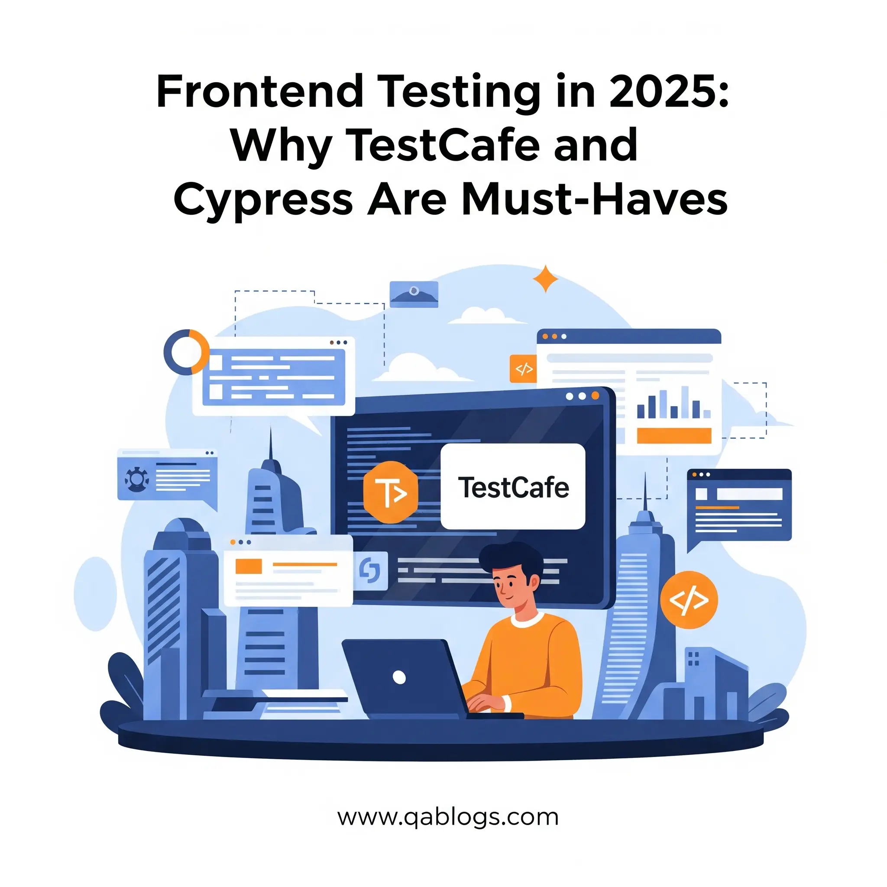

Frontend Testing in 2025: Why TestCafe and Cypress Are Must-Haves

Key Takeaways
- TestCafe and Cypress are essential for modern frontend testing in 2025.
- TestCafe excels in cross-browser E2E testing with no WebDriver dependency.
- Cypress offers a developer-centric experience with real-time debugging and robust component testing.
- Both tools support key trends like AI-driven testing, shift-left, accessibility, and cloud-native testing.
- QA professionals must choose the right tool or combine them to maximize coverage and efficiency.
In 2025, frontend development is more dynamic than ever, with complex JavaScript frameworks, progressive web apps, and AI-driven interfaces dominating the digital landscape. For QA engineers, testers, and developers, ensuring flawless user experiences across browsers and devices is a critical challenge. Frontend testing tools like TestCafe and Cypress have emerged as must-haves, empowering QA teams to tackle modern web complexities with speed, precision, and scalability. With 78% of QA teams adopting automated testing to meet agile demands (2024 survey), these tools are revolutionizing quality assurance. This blog post explores why TestCafe and Cypress are indispensable for frontend testing in 2025, offering practical insights and strategies to elevate your QA processes.
The Importance of Frontend Testing in 2025
Frontend testing ensures that web applications deliver seamless functionality, performance, and accessibility across diverse environments. With Chrome holding a 65.55% browser market share and the European Accessibility Act (EAA) mandating WCAG 2.2 compliance by June 28, 2025, QA professionals face mounting pressure to validate complex UIs, APIs, and responsive designs. TestCafe and Cypress stand out for their developer-friendly APIs, robust cross-browser support, and integration with modern DevOps workflows, making them essential for agile teams. Analogy: Frontend testing with TestCafe and Cypress is like having a skilled conductor for an orchestra—coordinating diverse elements (UI, APIs, browsers) to deliver a harmonious user experience. Let’s dive into why these tools are must-haves, their key features, and how QA professionals can leverage them to stay ahead in 2025.
TestCafe: Streamlined Testing for Modern Web Apps
Why TestCafe Shines in 2025
TestCafe is an open-source, Node.js-based testing framework designed for end-to-end (E2E) testing of web applications. Its no-browser-plugin architecture and built-in automation capabilities make it a favorite for QA teams seeking simplicity and reliability.
Key Features:
- No WebDriver Dependency: Runs tests directly in browsers, reducing setup complexity.
- Cross-Browser Testing: Supports Chrome, Firefox, Safari, Edge, and mobile browsers out of the box.
- Parallel Test Execution: Speeds up test suites by running tests concurrently, ideal for CI/CD pipelines.
- Smart Waits: Automatically handles dynamic content, reducing test flakiness.
Why QA Engineers Love It:
TestCafe’s JavaScript-based API is intuitive for developers, and its no-code Studio version supports non-technical testers, aligning with the 2025 trend of low-code automation.
Real-World Example:
A fintech startup used TestCafe to automate E2E testing for a payment portal, reducing test execution time by 40% and catching a critical checkout bug before launch.
Challenges with TestCafe
- Learning Curve: Requires JavaScript proficiency for advanced scripting.
- Limited Community Support: Smaller community compared to Cypress, though growing rapidly.
Solution: Use TestCafe Studio for no-code test creation and leverage its extensive documentation or TestCon Europe (October 21–24, 2025) for community insights.
Cypress: The Developer’s Choice for Fast, Reliable Testing
Why Cypress Dominates in 2025
Cypress, another open-source E2E testing framework, is renowned for its developer-centric approach and real-time debugging capabilities. Its architecture runs directly in the browser, offering unmatched speed and visibility into test execution.
Key Features:
- Real-Time Reloading: Updates tests instantly as code changes, accelerating debugging.
- Automatic Waiting: Handles asynchronous operations without manual waits, reducing flakiness.
- Component Testing: Supports testing React, Vue, and Angular components in isolation, a 2025 must-have for micro-frontend architectures.
- Rich Dashboard: Provides detailed test analytics, screenshots, and videos for failure analysis.
Why QA Engineers Love It:
Cypress’s intuitive UI and seamless integration with tools like GitHub Actions make it ideal for DevOps-driven teams.
Real-World Example:
An e-commerce platform used Cypress to test a React-based checkout flow, identifying a rendering issue that improved conversion rates by 10%.
Challenges with Cypress
- Browser Limitations: Primarily supports Chromium-based browsers, with limited Safari support.
- Setup Complexity: Requires Node.js expertise for advanced configurations.
Solution: Pair Cypress with BrowserStack for broader browser coverage and explore Cypress Cloud for simplified setup.
Comparing TestCafe and Cypress
| Feature | TestCafe | Cypress |
|---|---|---|
| Browser Support | Chrome, Firefox, Safari, Edge, mobile browsers | Primarily Chromium-based, limited Safari support |
| Setup | No WebDriver, minimal setup | Browser-based, Node.js required |
| Test Execution | Parallel execution, cloud-ready | Single-threaded by default, cloud via Cypress Cloud |
| Debugging | Basic, relies on logs | Real-time UI, screenshots, video recordings |
| Component Testing | Limited, focuses on E2E | Robust for React, Vue, Angular components |
| Low-Code Support | TestCafe Studio for no-code | Code-heavy, but plugins like Cypress Studio help |
| CI/CD Integration | Seamless with Jenkins, GitLab | Excellent with GitHub Actions, CircleCI |
Analysis: TestCafe excels in cross-browser testing and ease of setup, making it ideal for teams prioritizing compatibility and simplicity. Cypress shines in developer experience, real-time debugging, and component testing, perfect for micro-frontend projects. Combining both—TestCafe for E2E and Cypress for component testing—maximizes coverage and efficiency.
Key Trends Shaping Frontend Testing in 2025
- AI-Driven Testing: Tools like mabl integrate with TestCafe and Cypress to generate AI-powered test scripts, reducing manual effort by 35%.
- Shift-Left Testing: Both tools support early testing in development, aligning with DevOps and reducing defect costs by 20–30%.
- Accessibility Compliance: With the EAA deadline, TestCafe and Cypress integrate with axe-core to ensure WCAG 2.2 compliance.
- Cloud-Native Testing: TestCafe’s cloud integration and Cypress Cloud support scalable testing for microservices and PWAs.
Stat: 71% of QA teams in 2025 use E2E testing tools like TestCafe or Cypress to achieve 90% test coverage in agile workflows.
Challenges in Frontend Testing
- Dynamic Content: Modern apps with React or Vue require robust handling of asynchronous elements.Solution: Leverage TestCafe’s smart waits or Cypress’s automatic retries to stabilize tests.
- Cross-Browser Consistency: Ensuring identical behavior across browsers remains a challenge.Solution: Use TestCafe for broad browser support or pair Cypress with BrowserStack.
- Test Maintenance: UI changes lead to flaky tests, costing 25% of QA time.Solution: Adopt self-healing plugins or AI tools like Testim to reduce maintenance.
Real-World Example: A healthcare app used Cypress with axe-core to achieve EAA compliance, fixing 95% of accessibility issues before launch, avoiding potential fines.
Practical Insights for QA Professionals
- Choose the Right Tool: Use TestCafe for cross-browser E2E testing and Cypress for component testing in React or Vue projects.
- Integrate with CI/CD: Embed TestCafe or Cypress in GitHub Actions or Jenkins to automate testing in DevOps pipelines.
- Ensure Accessibility: Pair both tools with axe DevTools to meet EAA and WCAG 2.2 requirements, embedding checks in every sprint.
- Upskill in JavaScript: Master JavaScript through platforms like Codecademy to maximize TestCafe and Cypress capabilities.
- Leverage Community Resources: Join TestCafe and Cypress communities on X or attend QA or the Highway (June 27, 2025) for best practices and updates.
Conclusion: Powering QA Success in 2025
TestCafe and Cypress are must-haves for frontend testing in 2025, offering QA engineers the tools to tackle complex web applications with confidence. TestCafe’s cross-browser prowess and no-code options make it ideal for diverse teams, while Cypress’s developer-friendly debugging and component testing excel in micro-frontend environments. By integrating these tools into your QA strategy, you can ensure robust, accessible, and high-performing applications that meet modern demands. Ready to transform your frontend testing? Explore TestCafe and Cypress today, and share your experiences in the comments below. Join QA Blogs on X for real-time updates or contact us for tailored guidance on mastering these tools. Let’s elevate quality assurance together in 2025!
Join Our Community of QA Professionals
Get exclusive access to in-depth articles, testing strategies, and industry insights. Stay ahead of the curve with our expert-curated content delivered straight to your inbox.
Nikunj Mistri
Founder, QA Blogs
Related Articles

Weekly Recap: Top 5 Software Testing Innovations & Trends (June 2025)
Category: Testing Trends
TestRail's 2025 Report: Key Takeaways for Modern QA Teams
Category: QA Trends & Reports
mabl’s 2025 Testing Revolution: How AI Agents Are Redefining QA Efficiency
Category: AI & Automation
Mastering Chrome for QA Testing: A Comprehensive Guide
Category: Testing Tools
About the Author